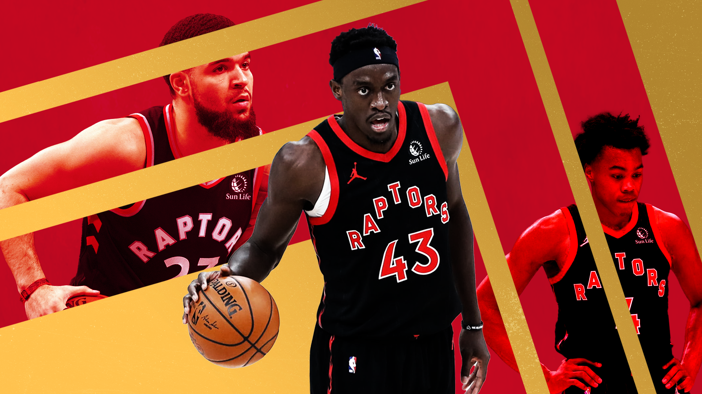

The Toronto Raptors are on a rise, and so are their starters’ minutes
The Toronto Raptors are scorching hot as they climb up the standings, and it’s certainly giving their fans some hope for a deep playoff run.
Sean Carroll illustration
P rocess is more important than results. It’s not the six-game winning streak that’s impressive, it’s the opponents they’ve faced in a crowded schedule. The Toronto Raptors have dethroned first-placed teams and one of the hottest teams in the league, en route to an 8-2 record in their last ten games.
The Raptors are led by Eastern Conference Player of the Week Pascal Siakam, who averaged 24.5 points, 11.8 rebounds and 5.8 assists in his award-winning week. For the season, Siakam is averaging 22 points per game on a cool 50 percent from the field. His recent run of hot form has fans celebrating the fact that their team is now out of the play-in, and into a playoff spot.
TWithout a doubt, the starting lineup has been carrying this team – and that is an understatement. Fred VanVleet, Siakam, and OG Anunoby are respectively first to third in minutes per game across the league, with Scottie Barnes not too far behind. These are highly conditioned athletes, so playing almost 40 minutes per game should be feasible according to Stan Van Gundy.
Sure, it might not affect them midway through the season, and sure they are one of the youngest teams in the league, but this is not the equation to winning in the bigger picture.
Let’s take a glance at the 2016 Golden State Warriors, the infamous 73-9 team. They had clinched home-court advantage throughout the playoffs relatively early in the season. However, Steve Kerr did not care, as the eight-time champion coach played the big three of Steph Curry, Klay Thompson, and Draymond Green until the 82 nd game. They missed a combined six games in that year, prior to the playoffs.
Of course, that is not the sole reason why they blew a 3-1 lead to the Cleveland Cavaliers, but fatigue had to be part of the reason why Curry shot 22-of-60 from the field and 15-of-42 from deep in his final three games.
Again, by no means are the Raptors are a title favourite, but even worse, rest may not even be an option towards the end of the season as they are fighting to avoid the play-in.
The importance of rest should be a familiar topic with the Raptors community. The great Alex McKechnie and trainers popularised load management when the team acquired Kawhi Leonard a summer prior to their championship. Now the LA Raptors – sorry, the Clippers – are using the same method for their superstar.
It’s a different situation now with fresher legs and younger minds. How can Masai Ujiri and company fix this “problem”? It’s simple. Get a role player that Nick Nurse trusts enough to play at least 20 minutes.
Nurse has been orchestrating a seven-man rotation after the Raptors’ recent wave of COVID protocol absences, with Precious Achiuwa and Chris Boucher the only players off the bench playing meaningful minutes. If Khem Birch can stay healthy, it could even be an eye-popping eight-man rotation.
Fans have been salivating for a true centre - a seven-foot-tall and hard-nosed paint protector – since the departure of Marc Gasol and Serge Ibaka. However, seeing that the three best players off the bench are all bigs, should centre be a priority for Ujiri to upgrade this rotation?
Let’s not discredit players like Yuta Watanabe, Dalano Banton, and Malachi Flynn. They can be solid contributors, especially at the defensive end. That is where the problem lies, though, as they do not have a consistent offensive arsenal in their games at this stage. Try to remember the last time Sixth Man of the Year was awarded to a defensive player.
Despite the need for a scorer, the Raptors acquired Thaddeus Young at the trade deadline. Swapping Goran Dragic and a first-round pick for Young, Drew Eubanks and a second-round pick. Young is not a guard, nor can he space the floor.
However, he is a 6’9” forward who has a high basketball IQ, good passing sense, with defensive versatility. That’s the prototypical basketball team that the Raptors are experimenting with.
This was a classic Ujiri move – discovering a player that’s not sought after by the fans and turning him into an effective player in Toronto. Obviously, the latter is yet to be proven, but Young is a perfect veteran, and he should be a regular in the rotation.
Now the question is, how will coach Nurse – a mad scientist – allocate Young’s minutes alongside the Raptors’ other 6’9” forwards?
This trade also indicated that we will see more of Point-Pascal or Point-Scottie, potentially running the second unit with Banton.
The playmaking skills of Siakam and Barnes might help ease the blow of not acquiring a player with traditional ball-skills, and it only increases the intrigue around Ujiri and Nurse’s madhouse basketball experiment. But as the playoffs approach and the Raptors’ stars start to feel the weight of their minutes this season, Toronto might regret not pursuing a different target at the trade deadline.